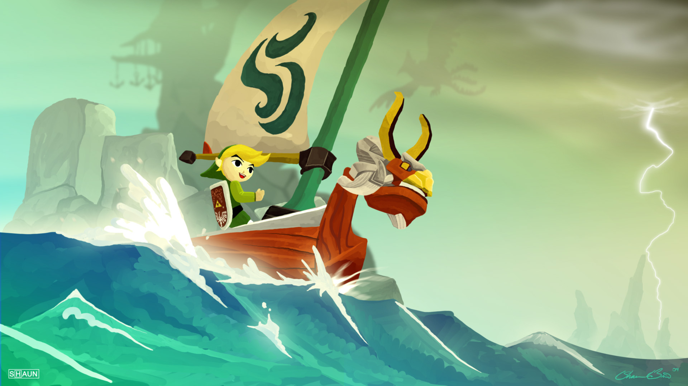
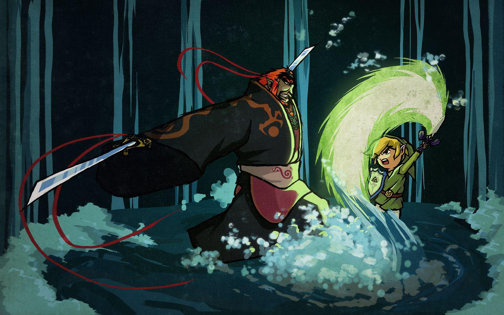

The Plot
The boat takes Link to 3 different locations; Dragon Roost, Forest Haven, and GreatFish Isle. Link must first help the ancient creature from Dragon Roost, Valoo, with a giant crab creature sent by Ganon. Then Link meets the Deku Tree in Forest Haven, in which the Deku Tree lost of his koroks(Little tree creatures) and Link must rescue him. Link attempts to meet Jabuun on GreatFish Isle, but he fled the island for saftey and they meet at the back of Outset Island. Once Link obatins all three pearls, the Tower of the Gods rises out from the sea and he must complete the trials inside. After the trails a opening to the kingdom of Hyrule underneath the sea is unlocked and Link is able to pull the master sword. Once again Link attempts to save his sister in which he succeeds, but when he tried to fight Ganon the sowrd had no effect. This is when the King of Red Lions reveals that he was the king of Hyrule who got left behind the flood controlling the boat in the temple of time and revealed that Tetra, the pirate captain, was the decendant of Zelda.
 wall.alphacoders
With this knowledge in the hand of Link he then sets sail to find these 2 decendants from 2 different sages, who have the power to bring the Master Sword back to its original form. After he has done this he is tasked to find the last piece of the triforce, as Ganon and Zelda both have 1 piece. The issue is that the last pieces was broken up into 9 shards. After a lot of exploring Link is able to put the last piece of the Triforce together and break into Ganons castle with Zelda. Ganon left many foes and trials for Link to over come but when he gets through them all Link and Zelda finally face of Ganon. Unfortantly Ganon was able to steal the 2 pieces of the Triforce from the 2 and is about to wish to rule the world, but then the King of Hyrule sacrifices himself by taking the wish first and floods the rest of the land underneath the sea. To make sure that Ganon cannot return Link slays the demon and the King of Hyrule protects Link and Zelda to get to the surface, ending the story.
 wallpaperaccess
Important Items
- Triforce
- Grappling Hook
- Deku Leaf
- Hero Bow
- Skull Crusher
- Hook Shot
- Mirror Shield
- Master Sword